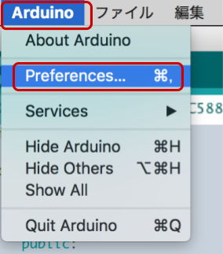

Arduino IDE は標準では Wio LTE の開発環境が入っていませんが、環境設定から追加することができるため、その設定をおこないます。
できるようになる事
- Arduino IDE にて Wio LTE を用いた開発
このハンズオンでサポートしない事 (前提知識)
- Arduino IDE のセットアップ (macOS 編 をご覧ください (約15～20分))
このコンテンツの進め方
ページの内容を読み、また作業を行ったら右下の［Next］を押して次のステップへ進みます。また、［Back］を使って戻ったり、左のナビゲーションメニューでもページの移動が可能です。
左上の［×］を押してコンテンツを終了することができます。また、ページを開きなおすことで再開できます。ページのアドレスはブラウザの［履歴］メニューを利用してください。
ハードウェア
品名 | 数量 | 価格 | 購入先 | 備考 |
Wio LTE JP Version | 1 | 9,800円 | ソラコム 等 | 手元くなくても「サンプルスケッチの実行」までは進めることができます。 その他のキットに同梱されている Wio LTE でも OK です。 |
microUSB ケーブル | 1 | ― | ― | Wio LTE JP Version に付属しています。 それ以外のものを利用する場合は 1A 以上の電力が利用可能な品質のものをご利用ください。 |
(必要な方のみ) USB 変換アダプタ | ― | ― | ― | Wio LTE とパソコンを USB ケーブルで接続する際に利用します。 1A 以上の電力が供給できるものを利用してください。(USB 3.0以上に対応していれば概ね安心です) |
※ 金額は本コンテンツ作成時となります。ソラコムで販売している金額は税抜き・送料別です。
それ以外で必要となるもの
Arduino IDE がセットアップ済みのパソコン |
|
Arduino IDE を起動したら［Arduino］>［Preferences...］を開きます。

追加のボードマネージャのURL の  をクリックします。
をクリックします。

ボード定義の URL を入力します。
テキストボックスに以下の URL を入力します。(".json" まで1行で入力してください)
https://www.seeed.co.jp/package_SeeedJP_index.json
入力したら［OK］をクリックします。
環境設定の OK をクリックします。
環境設定のウィンドウに戻ってきたら［OK］をクリックします。

Arduino IDE の［ツール］>［ボード: ...］>［ボードマネージャ...］をクリックします。
"SeeedJP STM32 Boards" をインストールします。
ボードマネージャの一覧から SeeedJP STM32 Boards (by Seeed K.K.) を選んで［インストール］をクリックします。
バージョンはインストール時における最新バージョンを選んでください。
※ 約350MBのダウンロードが発生します。早くても 20分、遅いと 60分以上かかることがあります。
インストールが終了したら［閉じる］をクリックします。
以上で、Wio LTE 用ボード定義のインストールは完了です。
Arduino IDE の［スケッチ］>［ライブラリをインクルード］>［ライブラリを管理...］をクリックします。
Wio LTE for Arduino をインストールします。
ライブラリマネージャの一覧から Wio LTE for Arduino (by Seeed K.K.) を選んで［インストール］をクリックします。
バージョンはインストール時における最新バージョンを選んでください。
※ 約 54KBのダウンロードが発生します。
インストールが終了したら［閉じる］をクリックします。
ここまでのセットアップが正常にできているか、実際にサンプルのプログラム (スケッチと呼ばれる) をコンパイルしてみます。
ここでは Wio LTE 実機はまだ使用しません。
ボード定義を "Seeed Wio LTE Cat.1" に変更する
［ツール］>［ボード: ...］>［Seeed Wio LTE Cat.1］をクリックします。
サンプルスケッチ "LedSetRGB" を開く
［ファイル］>［スケッチ例］>［Wio LTE for Arduino］>［basic］>［LedSetLGB］をクリックします。
コンパイルをする
新しく開いたウィンドウで ボタンをクリックします。スケッチのコンパイルが始まります。
ボタンをクリックします。スケッチのコンパイルが始まります。
ウィンドウの下部で進行状況が確認できます。

進行状況の部分にコンパイルが完了しました。と表示されれば、開発環境は正しくセットアップできています。

エラー発生時の対処
コンパイル時にエラーが発生すると以下のように表示されます。
ここまでのセットアップで不備が無かったか、再度確認してください。

※ エラーメッセージは一例です。他にも複数のパターンがあります。
後述する libusb をインストールするために必要です。
［Finder］>［アプリケーション］>［ユーティリティ］>［ターミナル］を起動します。
Terminal.app 内で下記コマンドを実行します。
/usr/bin/ruby -e "$(curl -fsSL https://raw.githubusercontent.com/Homebrew/install/master/install)"※途中でパスワード入力を求められたら macOS ログイン時のパスワードを入力してください
最終的に下記のように表示されればインストール成功です。
==> Next steps:
- Run `brew help` to get started
- Further documentation:
https://docs.brew.shWio LTE を DFU(Device Firmware Upgrade) モード に切り替えてファイル書き込みを行う際に必要なドライバです。
［Finder］>［アプリケーション］>［ユーティリティ］>［ターミナル］を起動します。
Terminal.app 内で下記コマンドを実行します。
brew install libusb※途中でパスワード入力を求められたら macOS ログイン時のパスワードを入力してください
最終的に下記のように表示されればインストール成功です。
==> Downloading https://homebrew.bintray.com/bottles/libusb-1.0.21.el_capitan.bo
######################################################################## 100.0%
==> Pouring libusb-1.0.21.el_capitan.bottle.tar.gz
🍺 /usr/local/Cellar/libusb/1.0.21: 29 files, 510.5KBここまでのセットアップで「システムレポート」(システム情報) で Wio LTE の動作モードが確認できます。
システム情報は［🍎］>［このMacについて］で表示されたウィンドウの［システムレポート］で表示する事ができます。
Wio LTE の動作モードとは？
Wio LTE は 2 つのモードを持っています。このモードを切り替えていくことで、プログラムを書き込んだり、実行したりする事になります。
電源 ON (= microUSB を接続した直後) は、通常モードで動き出します。
モード | 利用シーン |
通常モード | 書き込まれたプログラムを実行するときに使用 |
DFUモード | プログラムを書き込む時に使用 |
切り替え方と確認方法
DFU モードへの切り替え
Wio LTE とパソコンが microUSB でつながれた状態で、下記の操作を行います。(いつ行っても構いません)
- Wio LTE の BOOTボタンを押し、 押し続けてください
- Wio LTE の RSTボタンを押し、すぐ離します
- 押し続けていた BOOTボタン を離します
確認方法: システムレポートを起動し、一覧の中で USB の一覧に STM32 BOOTLOADER が表示されていれば、DFUモードで動作しています。
システムレポートの表示は自動的に切り替わりません。
［ファイル］>［情報の更新］で最新の情報を表示するようにしてください。
通常モードへの切り替え
Wio LTE とパソコンが microUSB でつながれた状態で、下記の操作を行います。(いつ行っても構いません)
- Wio LTE の RSTボタンを押し、すぐ離します
確認方法: デバイスマネージャを起動し、一覧の中でUSBの一覧に STM32 Virtual ComPort in FS Mode が表示されていれば、通常モードで動作しています。
システムレポートの表示は自動的に切り替わりません。
［ファイル］>［情報の更新］で最新の情報を表示するようにしてください。
いよいよ Wio LTE 本体でスケッチを実行します。
Wio LTE をパソコンにつなげる
Wio TE 本体と USB ケーブルを用意して接続してください。
この時 Wio LTE の電源が自動的に ON になりますが特に問題ありません。
サンプルスケッチ "LedSetRGB" を開く
［ファイル］>［スケッチ例］>［Wio LTE for Arduino］>［basic］>［LedSetLGB］をクリックします。
Wio LTE を DFU モードにする
Wio LTE を DFU モードにしてください。
マイコンボードに書き込む
"LedSetLGB" を表示しているウィンドウで ボタンをクリックします。
ボタンをクリックします。
スケッチのコンパイルと、スケッチの書き込みが始まります。
ボードへの書き込みが完了しました。と表示されたら正常終了です。
エラーが発生した場合
「マイコンボードに書き込む」を実行した結果、ウィンドウに下記のように表示された
| "ボード" が "Seeed Wio LTE Cat.1" になっていません。メニューの［ツール］>［ボード: ...］ から Seeed Wio LTE Cat.1 を選択してください。 |
「マイコンボードに書き込む」を実行した結果、ウィンドウに下記のように表示された
| Wio LTE が「通常モード」の状態、もしくはつながっていない状態で書き込もうとしています。Wio LTE を「DFU モード」にしてから、再度「マイコンボードに書き込む」を実行してください。 |
「マイコンボードに書き込む」を実行した結果、ウィンドウに下記のように表示された
| 主に Windows で発生するエラーです。Arduino IDE のシリアルモニタ―を表示ている状態で発生します。原因はシリアルポートの解放に失敗しています。Arduino IDE 1.18.10 以降であれば発生しにくいエラーですが、発生してしまった場合は Arduino IDE 終了＆再度立ち上げてから書き込みを行ってください。また Arduino IDE のシリアルモニターは使わずに TeraTerm を使うことで回避しやすくなります。 |
「マイコンボードに書き込む」を実行した結果、ウィンドウに下記のように表示された
| macOS で発生するエラーです。 libusb がインストールされていません。 libusb のインストールを参照して作業してから、再度「マイコンボードに書き込む」を実行してください。 |
「マイコンボードに書き込む」を実行した結果、ウィンドウに下記のように表示された
| Arduino IDE 1.8.8 以降の最新版をインストールしてください。もしくは、一度 Wio LTE を通常モードにした後 Arduino IDE の [ツール] > [シリアルポート] に表示される一覧の中から Wio LTE として認識されているシリアルポートを選択してください。その後に Wio LTE を DFU モードにして、再度「マイコンボードに書き込む」を実行してください。 シリアルポートの選択方法 (Windows): シリアルポートが複数表示される場合はデバイスマネージャーの「ポート」から STMicroelectoronics Virtual COM Port を探して割り当てられている番号のものを選択してください。(Wio LTE が接続されたシリアルポートが表示されない場合は Virtual COM Port ドライバのインストールが終わっていません。 Wio LTE 開発環境の準備 / Virtual COM Port ドライバのインストール をご覧いただき再確認をしてください。特に「終わってる」と思っていてもよくある間違いがあります。) シリアルポートの選択方法(macOS): シリアルポートが複数表示される場合は |
実行の様子
書き込みが完了したら Wio LTE を「通常モード」にします。すると Wio LTE に書き込んだプログラムが実行されます。
Wio LTE 上の LED が点灯したら成功です。
以上で Wio LTE 開発環境を Arduino IDE への追加するハンズオンは終了です。